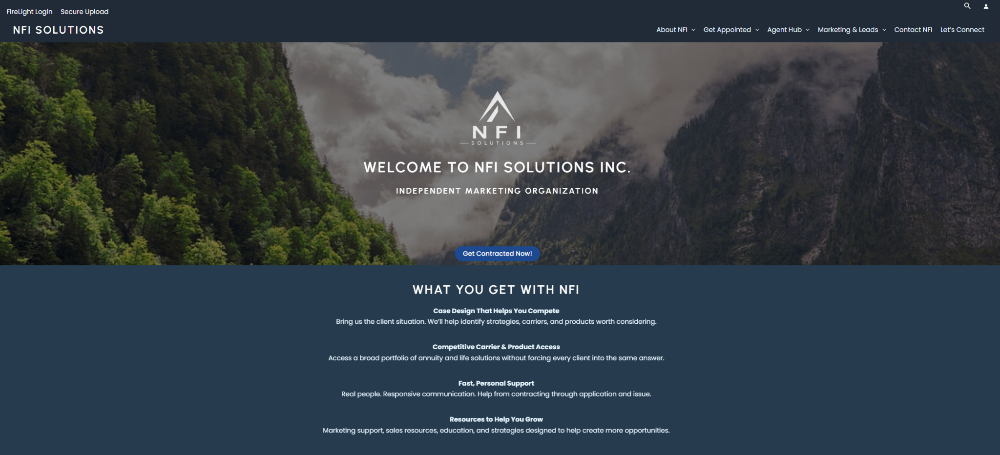
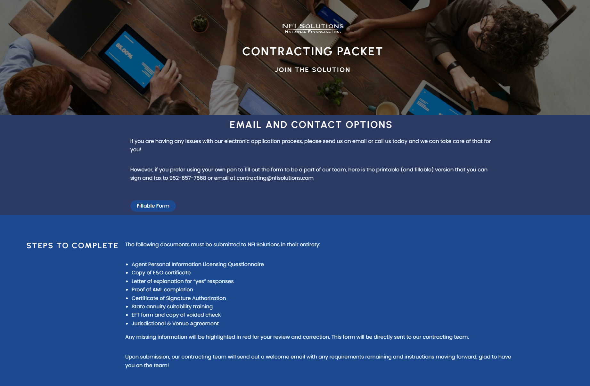
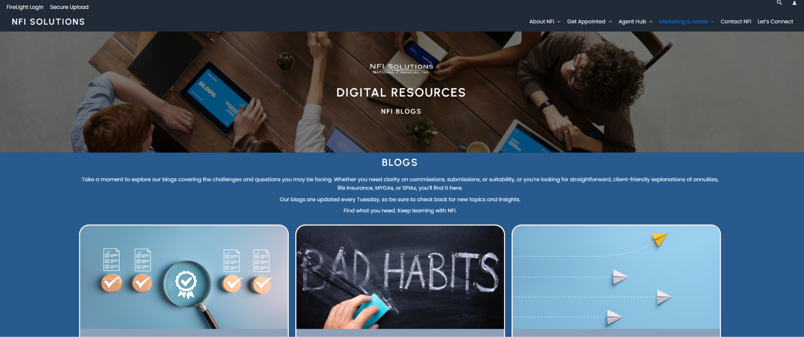
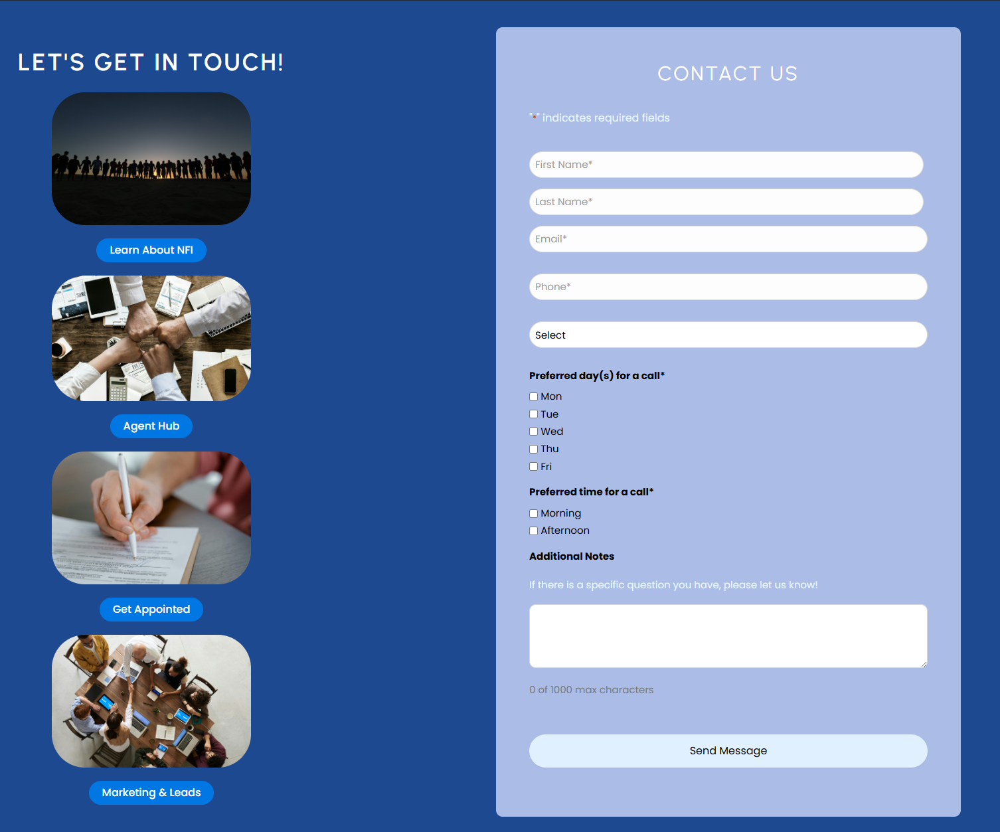

This case study documents my original design and build. The public websites have since changed and no longer represent that work. The screenshots below preserve the version described here.
The problem
NFI Solutions needed a website that explained its value to independent insurance agents and supported recruitment. Its sister brand, NFI Retirement Academy, would serve a different audience: people seeking retirement education.
I needed to build an agent-focused site with a structure that could also support the second brand without duplicating the technical foundation.

Plan before building
Before designing pages, I mapped the navigation, content hierarchy, and page-level outlines. That planning established where team biographies, carrier information, onboarding, and resources belonged.
The architecture gave each section a defined purpose before I built its template. It also provided shared structural logic that could carry into NFIRA while allowing the content and visual treatment to change.
Design for agents
NFI Solutions needed to answer why an agent should work with the organization. I used a navy and dark-blue palette, professional imagery, and language suited to visitors already familiar with the industry.
The contracting and resource pages translated that purpose into practical destinations. Agents could find onboarding steps or browse relevant content without treating every page as another recruitment pitch.


Own the build
Outside of the original logo, I owned the information architecture and page design, including reusable templates and copy structure. I also handled lead-capture forms and their automation connections.
My technical responsibilities extended to domain decisions, plugins, and integrations. Reusable patterns made future additions easier to maintain after handoff.

Build a shared foundation
The shared system was a starting point for the second site, not a requirement for identical pages. NFI Solutions could speak directly to agents, while NFIRA needed to explain an unfamiliar process to everyday clients.
The NFIRA website case study shows how I adapted the foundation for that audience through brand development and a different content experience.
Results from the original site
The NFI Solutions site was developed over approximately five to six months and was live for roughly six months in the version documented here.
During that period, organic search visibility increased 65%. Overall website traffic was estimated to have increased by 50% to 70%. The traffic figure is an estimate, and these results describe the original site period rather than the current website.
What this work shows
This project connected upfront information architecture with hands-on WordPress implementation. I built a site around an agent’s questions and created a reusable foundation that could support a second brand with different needs.